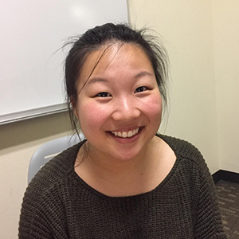

Emily Parker is a third year Managerial Economics student at UC Davis. Though she works hard to earn good grades, she values the relationships around her. When she is not studying, she enjoys hanging out with her friends. However, she realizes that smartphones distract her friend and her from connecting with each other in real life. She hopes to get closer to her friends that they can know each other on a personal level.